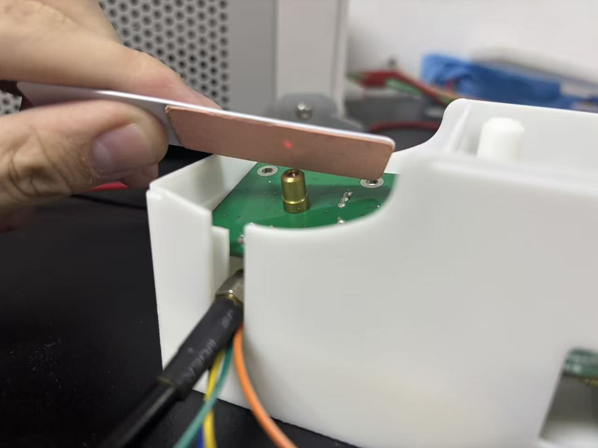
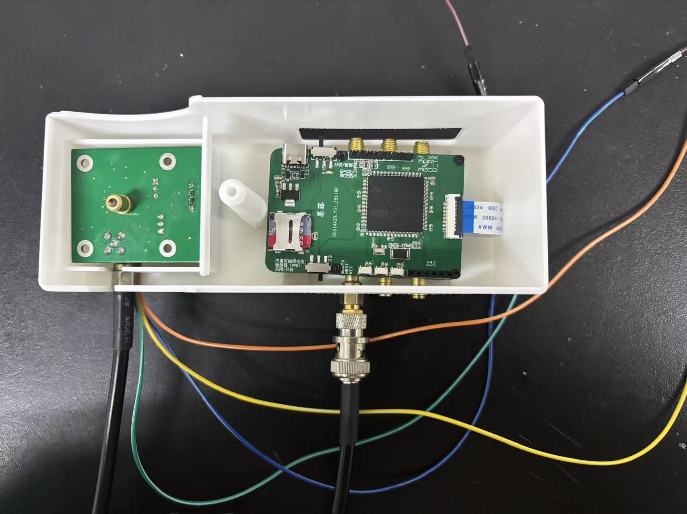
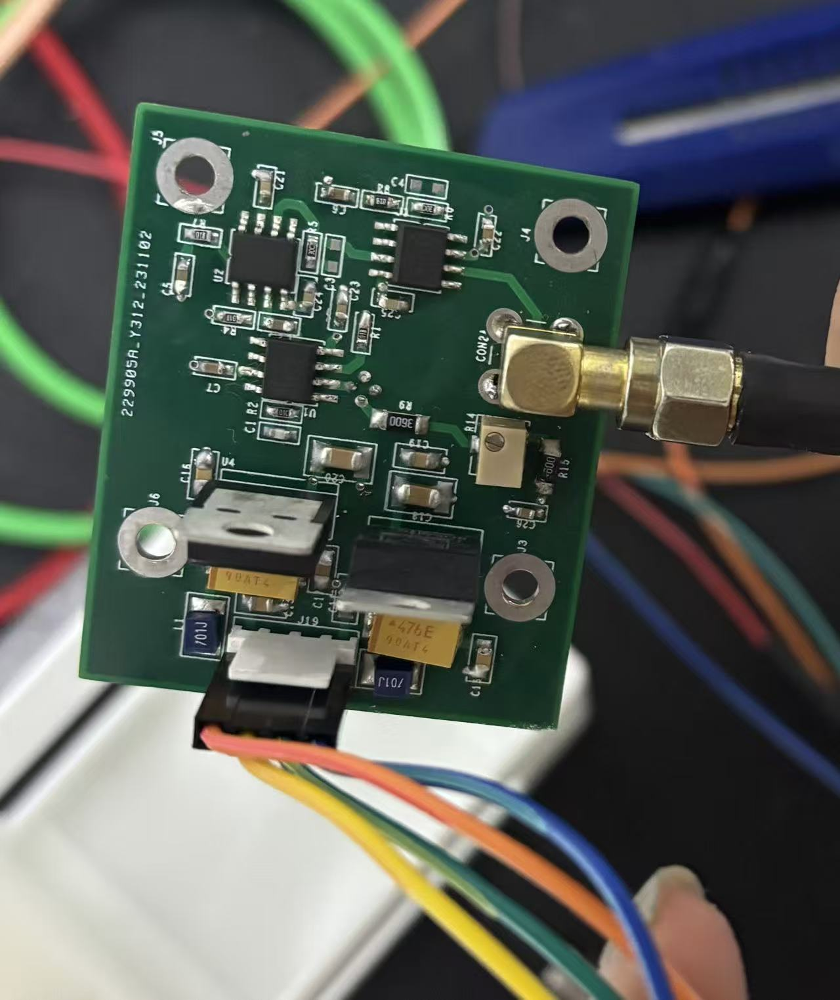
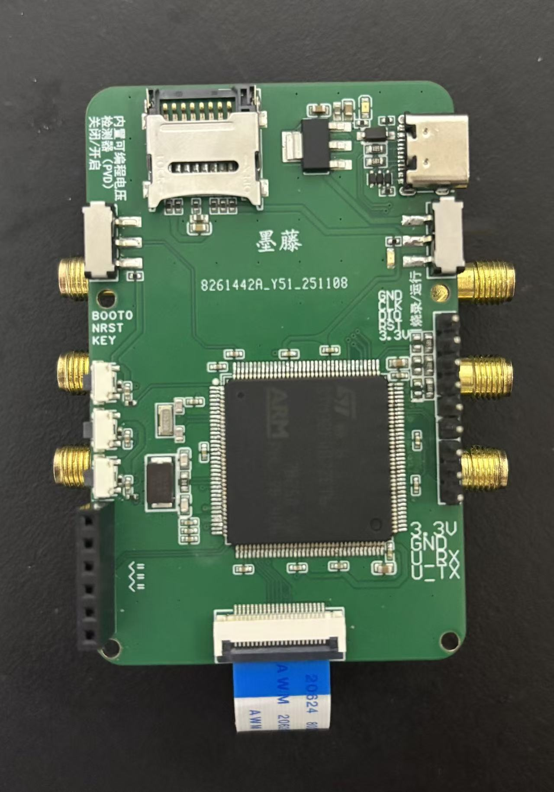
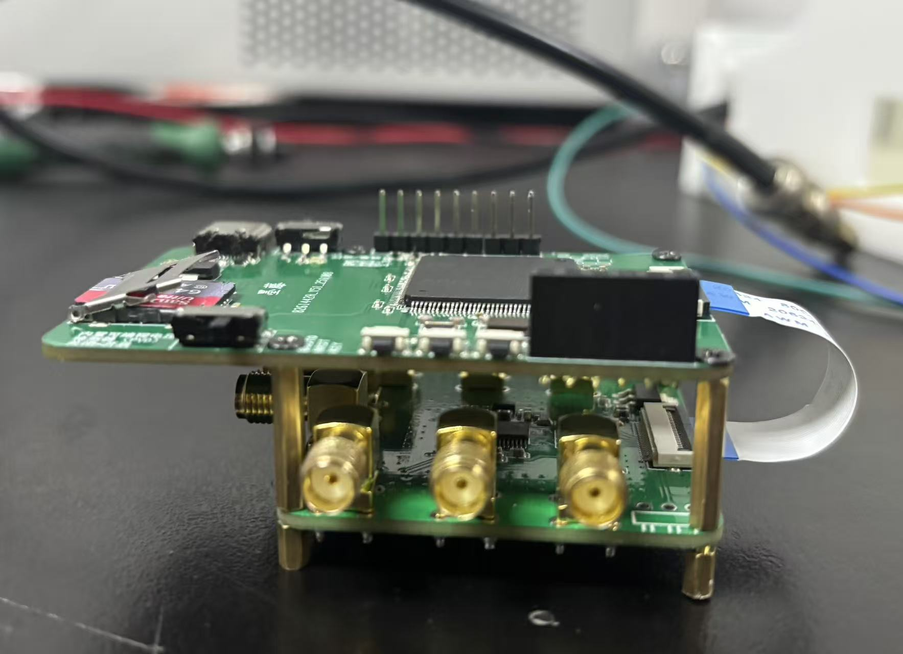

光电采集
传感模块与 ADS8688 完成双通道采样。
OPTICS / ADC基于 PPG 信号的血管参数监测系统，从光电采集、嵌入式通信，到模型推理、数据库与移动 App 的完整工程链路。

设备采集的二进制波形经过帧校验与去重，进入模型推理，再由后端持久化并提供给 App。每一层都有可独立部署的入口。
传感模块与 ADS8688 完成双通道采样。
OPTICS / ADCESP32 组织数据帧并向服务器可靠上传。
ESP32 / HTTPPython 调度 MATLAB 编译模型，输出血压与心率。
PYTHON / MATLABExpress 与 MySQL 提供账户、设备和历史趋势。
API / DATABASE / APP个人工作覆盖应用层、设备到云端的传输层，以及算法训练与部署优化。下面只列实际承担的部分。
完成 uni-app 前端、Node.js / Express 后端与 MySQL 数据设计，覆盖登录、设备绑定、健康总览、趋势、个人资料与双语界面。
打通二进制波形上传链路，完成帧格式校验、文件与元数据落盘、重复帧识别，以及算法任务的串行调度。
整理五特征训练路线，采用受试者级数据划分；同时将 MATLAB 模型封装为服务器可调用程序，统一输入输出与错误处理。
现役 App 已通过 H5 开发编译。以下界面依据项目实际页面与交互重现，数值为展示数据，不代表医学验证结论。
将设备状态、核心指标、短期趋势和原始波形入口放在同一条用户路径。
按时间范围查看真实数据库记录，并支持中英文界面切换。
当前为科研原型；血氧仍是占位数据，袖带真值采集链路尚未完全接通，网站不将其包装成医疗产品。
仓库保留 STM32F4、ADS8688 和 ESP32 工程，以及 Altium 原理图和 PCB 源文件。原型完成了传感、采集、传输和服务器接入的实物联调。




对设备编号与完整帧哈希进行短期去重，同时保持 HTTP 200 确认，避免发送端持续重试。
使用 Python 作为输入、进程和输出桥梁，串行调度编译后的模型程序，隔离临时文件与运行时资源。
避免同一受试者数据同时进入训练集与验证集，减少数据泄漏带来的虚高结果。
审计并记录兜底预测、血氧占位和真值链路缺口，为下一阶段实验留下可信基线。
团队：陈一丹、张博涵、蒙金涛｜指导教师：赵宇
项目当前仍在实施阶段，尚未结题。
我关心的不只是“算法能跑”，而是信号如何被可靠采集、计算、存储，并最终成为用户能理解的产品。